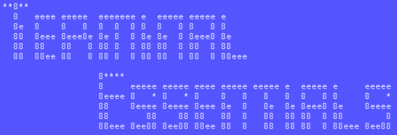
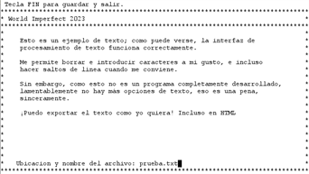
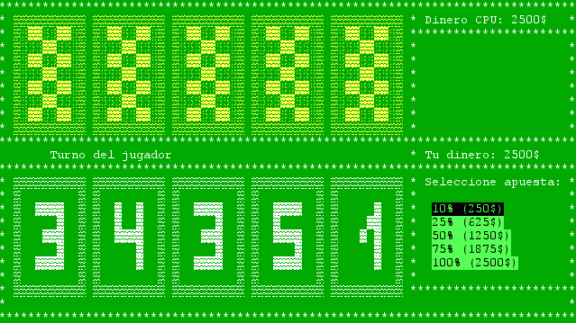
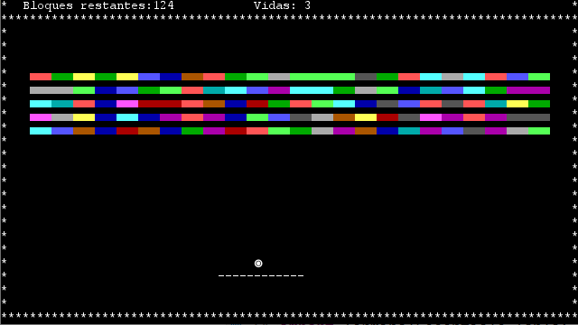

Terminal Essentials
Librería de funciones basada en Lanterna


Procesador de textos

Póker

Breakout
Introducción y funcionamiento
En base a una versión reducida Lanterna 3.1.1 - librería que permite la visualización de programas en formato terminal - presente proyecto parte como un ejercicio meramente práctico consistente en la implementación propia de funciones ya integradas originalmente:
- Creación de ventanas: permite la disposición de ventanas; cuenta con ajustes de ancho, alto y título.
- Texto progresivo: aparición de caracteres con interrupciones en el flujo de ejecución, creando una animación.
- Sistema de menús: clase encargada del manejamiento de botones, que permite la incorporación de menús horizontales y verticales completamente personalizables.
- Menús de selección múltiple: del mismo modo, horizontales y verticales.
- Tablas dinámicas: creación de tablas variables en cuanto al texto de sus columnas.
- Scanner de Strings: altamente parametrizabl, para registrar la entrada de los usuarios.
- Sistema de Sprites: a fin de mostrar elementos complejos en pantalla sin necesidad de programar manualmente. Incluye sistema de colisiones para videojuegos.
Presentación y demostración en vídeo
Repositorio y descarga
Puedes ver y descargar el repositorio en esta página de GitHub.